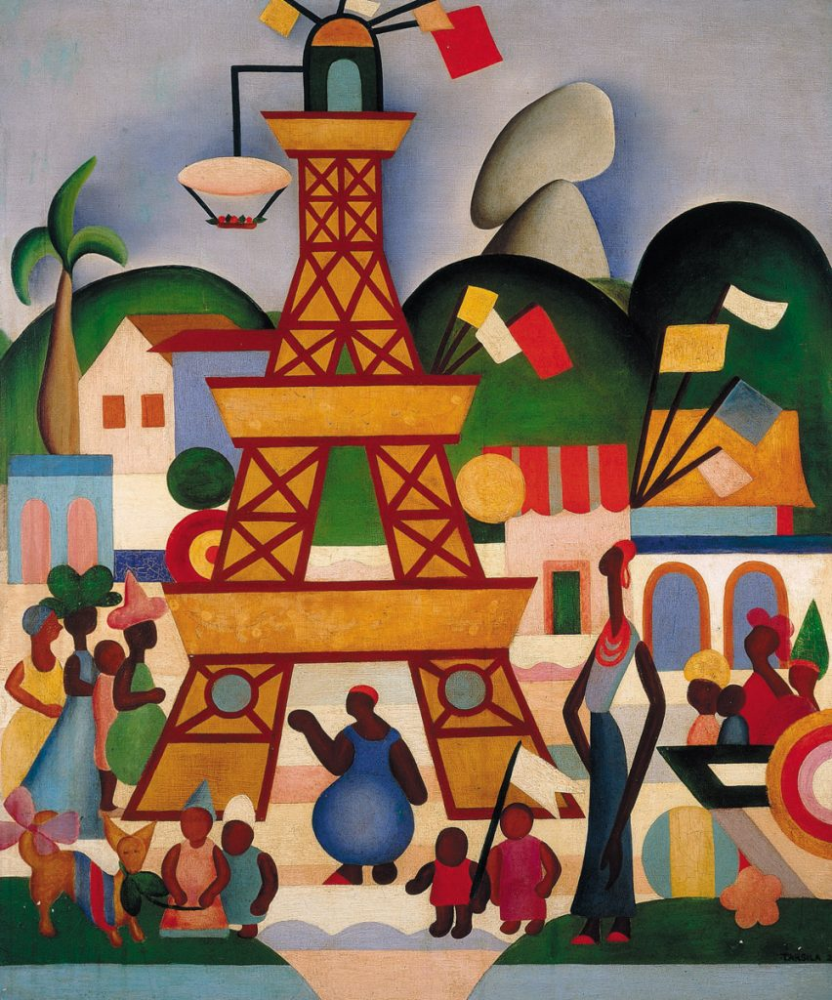
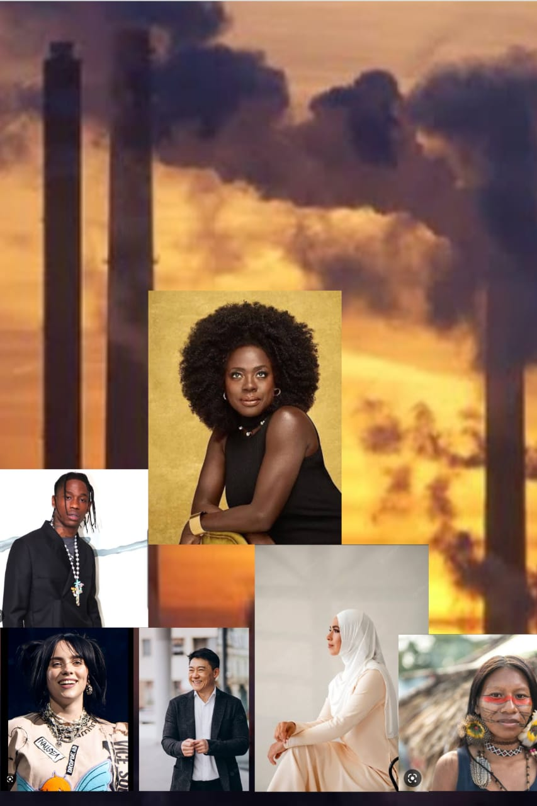

Uma analogia possível para essa obra seria a representação da classe trabalhadora e sua relação com a industrialização no Brasil durante o período modernista. Além disso, a obra também pode ser interpretada como uma crítica social, apontando para as desigualdades entre as classes sociais e a exploração da mão de obra.